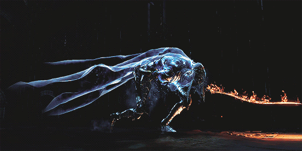
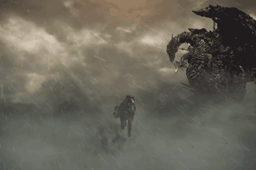
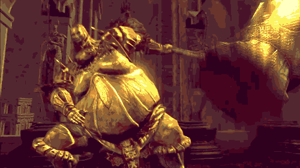

Dark Souls is an action role-playing game developed by FromSoftware and published by Namco Bandai Games. A spiritual successor to FromSoftware's Demon's Souls, the game is the second installment in the Souls series. It was released for the PlayStation 3 and Xbox 360 in Japan by FromSoftware in September 2011 and worldwide by Namco Bandai Games in the following month. Dark Souls takes place in the fictional kingdom of Lordran, where players assume the role of a cursed undead character who begins a pilgrimage to discover the fate of their kind.
More on dark souls at :
Dark souls Wikipedia
DARK SOULS LORE :
The world of Dark Souls is a world of cycles. Kingdoms rise and fall, ages come and go, and even time can end and restart as the flame fades and is renewed. These cycles are linked to the First Flame, a mysterious manifestation of life that divides and defines separate states such as heat and cold, or life and death. As the First Flame fades, these differences also begin to fade, such as life and death having little distinction, and humans becoming Undead. The onset of an Age of Dark, the time when the First Flame has fully died, is marked by endless nights, rampant undeath, time, space, and reality breaking down, lands collapsing and converging on one another, people mutating into monsters, darkness covering the world, and the Gods losing their power. To avoid this and prolong the Age of Fire, the bearer of a powerful soul must "link" themselves to the First Flame, becoming the fuel for another age.
Read More ...
LINKS TO SOME EXCELLENT LORE STORY TELLERS ON YOUTUBE FOR INDEPTH INSIGHT (IFYKWIM):
My first dark souls experience began with dark souls 3 and suprisngly not the earlier games of the series as I was introduced to the genre by a friend of mine who was a big fan of the series and the genre itself. After a punishing and extreme gameplay that I got from Dark souls 3, I got into the hang of punsihing my self with gruesomely hard gameplay. With it slowly becoming an addiction to take on challanges and beating one hard boss after another gaining not only experience along the way but also learining about the lore and beautiful world of dark souls. With the matching artistic aspect of dark souls to my own preference I was absorbed by the game. I set out to finish the rest of the souls game as well, I was finishing the games in decending order henceforth. The games not only brought me to appreciate the beautiful world of dark souls and its lore, it also made me appreciate the work the community and the developers had put into their game and how it had taken into context every aspect of their fans love for the genre.
CLASSES IN DARK SOULS:
There are differnt classes in DS with which you begin your journey with and each class being different and having its special wielding ability at the start of the game. Classes in Dark Souls determine the starting Stats and Equipment of the player. There are 10 Classes in Dark Souls that the player can begin the game with
Which class do you consider yourself to be ?
[SELECT ONE]
TOP 3 BOSSES IN DARK SOULS BASED ON DIFFICULTY: [PERSONAL RANKING]
#1 DANCER OF BOREAL VALLEY
INFO :
She was one of the daughters of the royal family of Irithyll, but was ordered by Pontiff Sulyvahn to become a dancer first, and then legioneer, which is equal to exile. He also gifted her dual blades, infused with darkness and fire, similar to his own weapons
Read More...
Animated Image :

#2 THE NAMELESS KING
INFO :
The Nameless King is possibly Gwyn's firstborn: a fearsome, dragon-slaying war god, founder of the Covenant of Sunlight and master of Ornstein, from the time of the ancient lords that had his deific status revoked and his name stripped from the Annals after an unnamed incident
Read More...
Animated Image :

#3 SMOUGH AND ORNSTEIN
INFO :
Smough is part of a tradition of angelic executioners, a tradition that began with Berserk. Ornstein was named after the composer "Leo Ornstein". Ornstein reappeared as The Old Dragonslayer in
Read More...

Comments :
The choice of bosses in this forum is strictly personal based. You might have differnet choices of hardest bosses ever in dark souls so please share your thoughts below.
- ADMIN